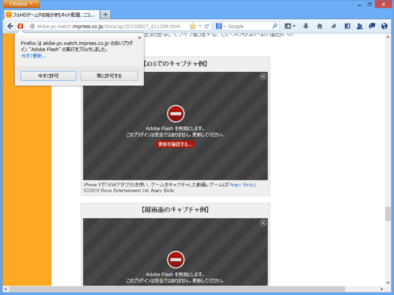
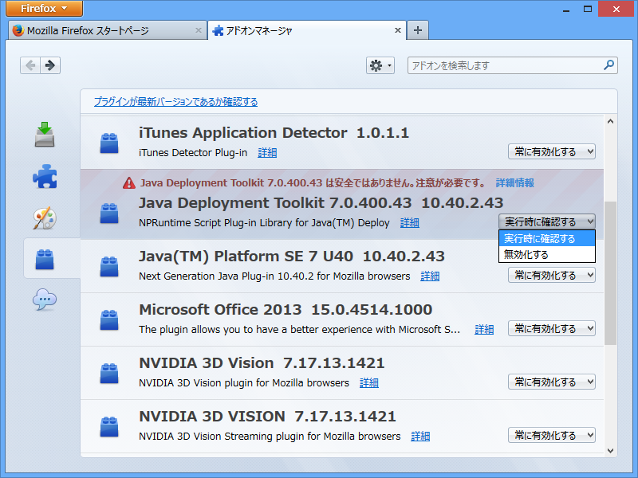
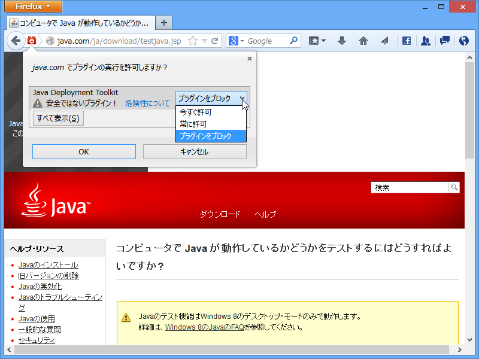

Firefox 24 の Click-to-Play
公開日：

Firefox 23 以前。

Firefox 24 以降。
「Adobe Flash Player」の旧バージョンをインストールして試してみた。
Java Deployment Toolkit
Java DT は、ユーザーのシステムに適したバージョンの Java の取得を管理するために、Java アプレットおよびアプリケーションにより使用される、非常に役に立つツールです。開発者は、JavaScript インタフェースも使用できます。このインタフェースは、Rich Internet Applications (RIA) の配備に必要な HTML コードを自動的に生成します。

Java DT はブラウザー単位で“常に有効化”できない（このバージョンからというわけではない。このブロックリストは外部で管理されているのかな？ よく知らないので今度調べてみる）。

ドメイン単位で有効化することはできる。今後はすべてのプラグインがこうなるのかもしれない。